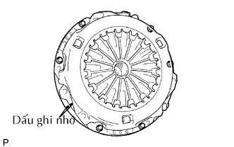
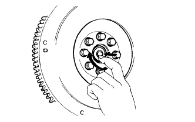
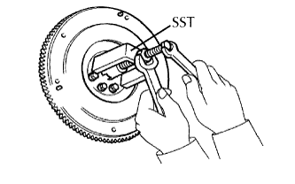

BỘ LI HỢP > THÁO |
| 1. NGẮT CÁP ÂM RA KHỎI ẮC QUY |
| 2. THÁO CỤM TRỤC CÁC ĐĂNG PHÍA SAU |
Tháo trục các đăng phía sau (Xem trang Kích chuột vào đây).
| 3. THÁO CỤM HỘP SỐ THƯỜNG |
Tháo cụm hộp số thường (Xem trang Kích chuột vào đây).
| 4. THÁO VÒNG BI CẮT LI HỢP |
| 5. THÁO CAO SU CÀNG CẮT LI HỢP |
| 6. THÁO CÀNG CẮT LI HỢP |
| 7. THÁO KẸP MOAY Ơ VÒNG BI CẮT LI HỢP |
| 8. THÁO GIÁ ĐỠ CÀNG CẮT |
Tháo giá đỡ càng cắt li hợp ra khỏi cụm hộp số.
| 9. THÁO CỤM NẮP LI HỢP |
|  |
Đánh các dấu ghi nhớ lên nắp li hợp và bánh đà.
Nới lỏng từng bu lông mỗi vòng một lần cho đến khi sức căng của lò xo bị giảm.
Tháo 6 bu lông bắt và kéo nắp che li hợp ra.
| 10. THÁO ĐĨA LI HỢP |
| 11. KIỂM TRA VÒNG BI PHÍA TRƯỚC TRỤC SƠ CẤP |
|  |
Quay vòng bi bằng tay bằng cách tác dụng lực quay.
Nếu vòng bi bị kẹt hoặc có nhiều lực cản, hãy thay thế vòng bi trục sơ cấp.
| 12. THÁO VÒNG BI PHÍA TRƯỚC TRỤC SƠ CẤP |
|  |
Tháo các 2 bu lông đối nhau bất kỳ.
Dùng SST, tháo vòng bi trục sơ cấp.